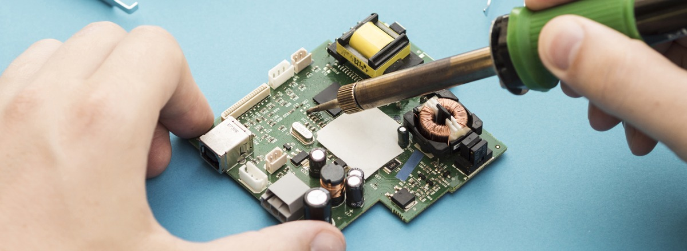
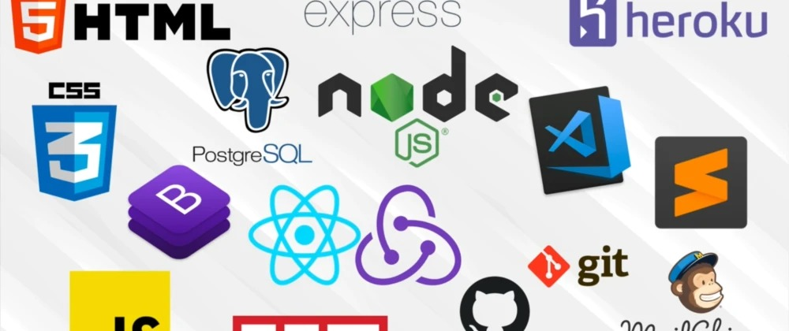

7 Study Tips for College Students
The best study strategies for college students can increase attention and focus and limit distractions.
From discovering your learning style to chewing gum, there are plenty of ways that you can take control
of your study habits. To help you create healthy college study habits and excel in your education,
we’ve created a list of seven college study hacks that you can use for your next exam.
Read More

7 Tips and Tricks to Learn Programming Faster
One of the common and basic questions among students or someone who wants to learn code is
“How can I learn to code fast and make a career as a programmer?”. Whether you are a student,
fresher or experienced person trying to switch your job in programming you will definitely try to find tips
and tricks to learn to program quickly and effectively.
Read More

10 Most Effective Pieces of Advice for College Students
Time flies when you’re in college. The four years of study you think will never end, soon become a thing of the past.
It’s important to maximize your time in college so that you can be proud of your achievements when you look back
after graduation.
Read More

Do's and Don'ts for Students at College
The first year of college is crucial as it will set the base for the forthcoming years.
This is a challenging phase for anyone as you will shift your curriculum pattern and become independent as an adult.
As you come across new people, new grading systems, and new goals, the journey can be tiring, and there can be a time
when you can make mistakes and ruin your life.
Read More